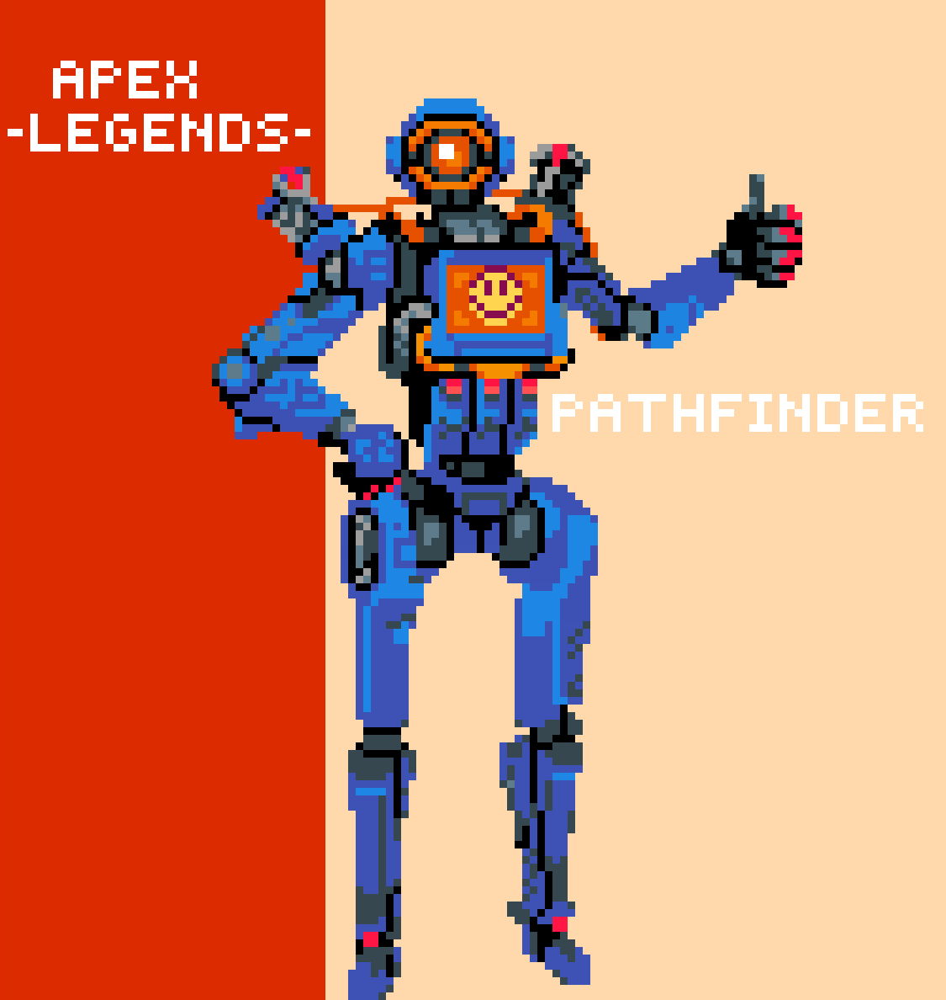

Delivery Duration Prediction
June 2024 - July 2024
Python, Deep Learning, Sklearn, LightGBM, PCA
- Effectuated the development of a predictive model using Python and Sci-kit Learn to estimate DoorDash delivery durations, leveraging advanced regression techniques and data scaling methods, resulting in a significant reduction in prediction error.
- Executed comprehensive data preprocessing and feature engineering on DoorDash delivery datasets, enhancing model accuracy and providing actionable insights for optimizing operational efficiency.
Video Game Data Analysis
June 2023 - March 2024
Python, R, MS Excel, Data Visualization, Spyder IDE
- Piloted comprehensive data analysis employing 7+ various statistical techniques and machine learning algorithms,exploring diverse perspectives to uncover hidden patterns and insights.
GINI Coefficient and Happiness
Sep. 2022 - May 2023
R, SQL, Machine Learning, Predictive Modeling
- Spearheaded a predictive modeling project intended on forecasting the happiness index of countries, integrating various data sources including the GINI index and geological data, performing data preprocessing and feature engineering to enhance model performance using R and SQL in tandem to achieve this.
- Executed a range of statistical algorithms, including random forest and lasso regression, identifying the most effective model for predicting country happiness, achieving over 90% accuracy in the final model.